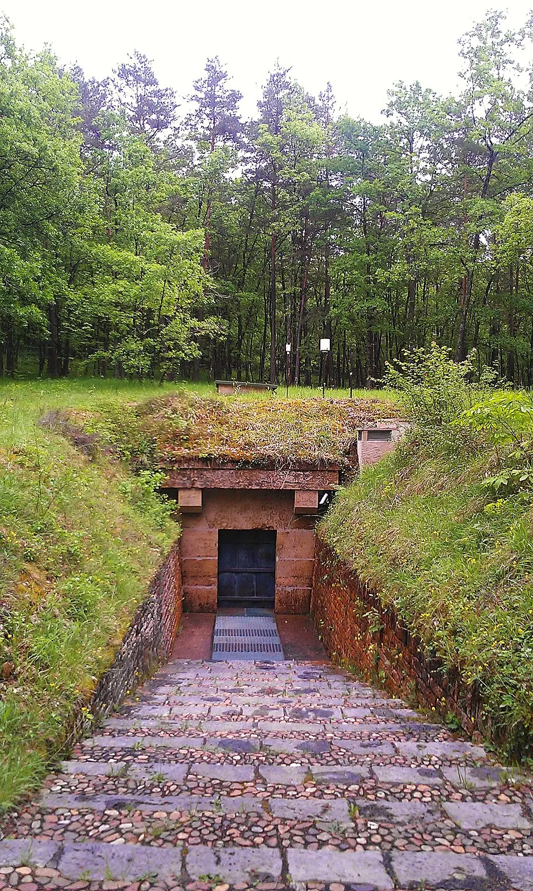
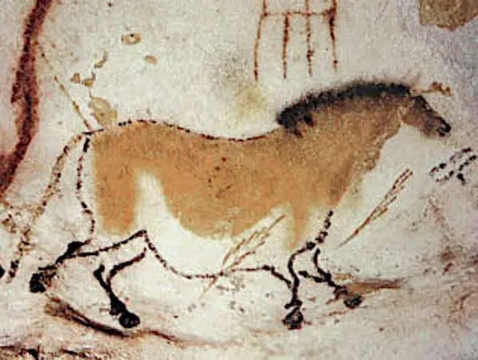
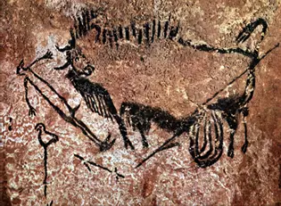
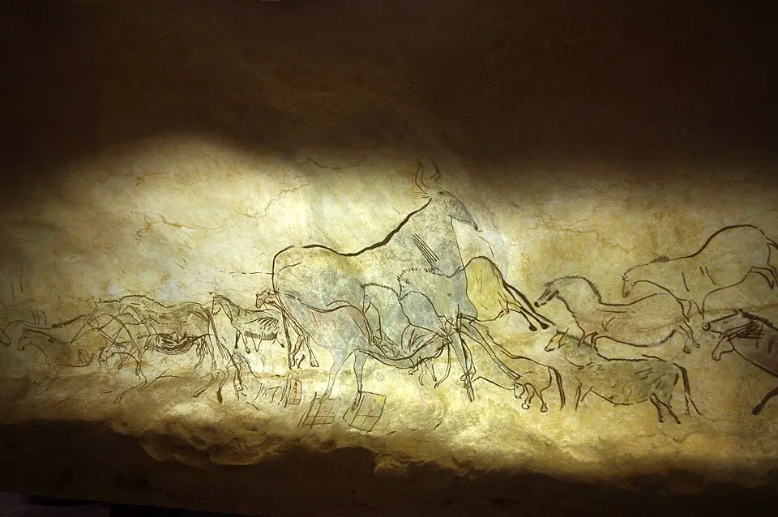

Con chó Robot và hang động vẽ 17.000 năm tuổi
Ngày 12/9/1940, một cậu thiếu niên và con chó tên Robot tìm thấy một cái hố dưới gốc cây bật rễ. Bên dưới là hơn 600 bức vẽ thú vật từ Kỷ Băng hà.

Ngày 12/9/1940, ở vùng đồi gần làng Montignac, tỉnh Dordogne, miền tây nam nước Pháp, cậu Marcel Ravidat 18 tuổi đi dạo cùng con chó tên Robot. Con chó sục vào một cái lỗ do một cây bật gốc để lại. Cái lỗ ấy dẫn xuống hang Lascaux, nơi có hơn 600 bức vẽ trên vách và trần đá. Câu chuyện của hang không chỉ là một phát hiện may mắn, mà còn là chuyện chính những người đến chiêm ngưỡng đã suýt làm hỏng nó.
Câu chuyện của hang không chỉ là một phát hiện may mắn, mà còn là chuyện chính những người đến chiêm ngưỡng đã suýt làm hỏng nó.
Bốn cậu thiếu niên và một giếng đứng
Ravidat quay lại cùng ba người bạn: Jacques Marsal, Georges Agnel và Simon Coencas. Họ chui xuống một giếng đứng sâu khoảng 15 m, vì tin rằng đó có thể là đường hầm bí mật trong truyền thuyết, dẫn tới trang viên Lascaux gần đó. Thay vì đường hầm, họ thấy những bức tường phủ kín hình bò rừng, ngựa và hươu.
Ngày 21/9/1940, các cậu dẫn linh mục Henri Breuil, nhà nghiên cứu thời tiền sử, xuống hang. Đi cùng ông có Denis Peyrony, quản lý Bảo tàng Quốc gia Tiền sử ở Les Eyzies. Breuil vẽ lại rất nhiều phác thảo. Ngày nay một số phác thảo ấy vẫn được dùng làm tài liệu nghiên cứu, vì nhiều bức vẽ gốc đã xuống cấp nặng.
Trên vách hang có gì


Hang có gần 6.000 hình, chia thành ba nhóm: thú vật, người và ký hiệu trừu tượng. Niên đại thường được ước tính từ 17.000 đến 22.000 năm trước, đầu thời kỳ Magdalenian, và vẫn còn tranh luận. Màu đỏ, vàng, đen được làm từ khoáng chất như oxit sắt, hematit, goethit và hợp chất mangan. Có chỗ màu được chấm bằng miếng thấm, có chỗ được thổi qua một cái ống. Ở chỗ đá mềm, người xưa khắc thẳng vào vách.
Trong hơn 900 hình thú, 605 hình được xác định chính xác: 364 con ngựa, 90 con hươu, bò rừng aurochs và bò bison mỗi loại khoảng 4 đến 5%. Ở Phòng Bò Tót, một con bò dài 5,2 m, là hình con thú lớn nhất từng được tìm thấy trong nghệ thuật hang động. Trần gian Apse cao từ 1,6 đến 2,7 m tính từ nền cũ, phủ kín hình khắc chồng lên nhau, cho thấy người vẽ phải dựng giàn để với tới.
Những con vật vắng mặt


Chi tiết lạ nhất có lẽ là những gì không có. Người vẽ Lascaux sống chủ yếu nhờ săn tuần lộc, nhưng trên vách không có con tuần lộc nào. Cũng không có cá. Cả hang chỉ có một hình người, nằm ở đáy một giếng sâu 9 m: một người đầu chim dường như ngã xuống đất, cạnh một con bò bison bị ngọn giáo đâm thủng bụng. Cảnh này đã có nhiều cách giải thích khác nhau, chưa cách nào được chấp nhận chung.
Ngay cả vai trò của con chó cũng cần đọc cẩn thận. Theo Wikipedia, khi kể lại về sau, Ravidat đã thêm thắt rằng con chó rơi xuống hang. Các ghi chép khác chỉ nói nó sục vào cái lỗ.
Khi khách tham quan làm hỏng hang


Hang mở cửa ngày 14/7/1948. Đến năm 1955, khí CO2, hơi nóng và độ ẩm từ khoảng 1.200 khách mỗi ngày đã gây hư hại thấy rõ. Cuối thập niên 1950, địa y và tinh thể bắt đầu mọc trên vách. Năm 1963, hang đóng cửa với công chúng.
Rắc rối chưa dừng ở đó. Năm 2001, hệ thống điều hòa mới được lắp, rồi một loại nấm trắng, Fusarium solani, lan nhanh trên trần và vách; người ta phải xử lý bằng vôi sống. Năm 2007 xuất hiện một loại nấm khác để lại đốm xám và đen. Tháng 1/2008, hang bị đóng hoàn toàn trong ba tháng, mỗi tuần chỉ một người được vào 20 phút để đo khí hậu. Năm 2018, một loài nấm mới được mô tả và đặt tên Scolecobasidium lascauxense, theo tên chính cái hang nơi nó xuất hiện.
Bốn bản sao cho du khách
Ngày nay chỉ vài chuyên gia được vào hang thật, mỗi tháng vài ngày. Du khách xem bản sao. Lascaux II, chép lại Phòng Bò Tót và Phòng Tranh, mở năm 1983, cách hang gốc khoảng 200 m. Lascaux III là năm bản sao lưu động đi triển lãm nhiều nước từ năm 2012. Lascaux IV, bản sao toàn bộ hang, khai trương tháng 12/2016, cách hang gốc 400 m. Năm 1979, hang được UNESCO đưa vào Di sản Thế giới cùng các hang khác ở thung lũng Vézère.
Bốn thiếu niên chỉ mất vài ngày để tìm ra Lascaux; giới khoa học đã mất hơn 60 năm mà vẫn đang tìm cách giữ nó an toàn trước nấm mốc và trước chính con người.